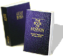

Robert M. Wilkes Biography
Brother Robert M. Wilkes was born in Afton, Wyoming. He and his wife, Estella, are the parents of six children, three girls and three boys. They also have eleven grandchildren.
After serving in the Central States Mission, Brother Wilkes received his BS degree from Brigham Young University in History and Physical Education and his M.Ed. in Educational Administration. He also studied at the University of Wyoming and University of Nevada at Reno.
Brother Wilkes has been a lecturer, seminary teacher, and an instructor in the Institutes of Religion. He has served as a bishop twice, a counselor in a stake presidency, a high counselor, stake president, regional representative and was recently released as president of the Wisconsin Milwaukee Mission. He currently serves as a high counselor for the Ricks College First Stake.
Brother Wilkes began his employment at Ricks College in 1970 as a faculty member in the department of Religion. He served five years as chairman of the Department of Recreation Education, five years as chairman of the Division of Religious and Family Living and four years as chairman of the Division of Education. His current assignment is Vice President of Student Life.
He was selected by the Associated Men's Students of Ricks College in 1974 as the Honorary Man of the Year. In 1975, he was selected as the Outstanding Young Faculty Member, and in 1987, he was honored as the Exemplary Faculty Member. He has been a speaker on Know Your Religion and Education Week programs for Brigham Young University and Ricks College since 1970.